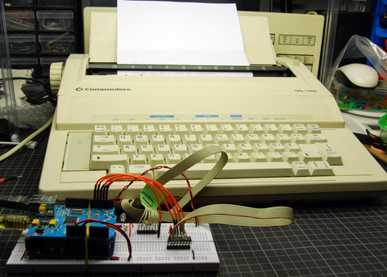
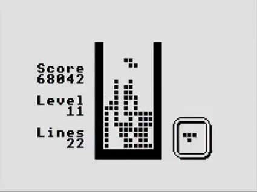

A weblog focused on interesting circuits, ideas, schematics and other information about microelectronics and microcontrollers.
E-books
Disclaimer
Because I have not tested all electronic circuits mentioned on this pages, I cannot attest to their accuracy; therefore, I do not provide a warranty of any kind and cannot be held responsible in any manner.
ATMega168
Twypper: A retro-style Twitter wall
20. March 2010 - 18:08 — adminNothing but a retro toy: A Commodore typewriter as a "twitter console".

TV Tetris and Snake on AVR
6. March 2010 - 13:09 — adminAnother piece (better say "Two in one") to my collection of simple TV games: Ben Ryves' Snake / Tetris, based on ATMega168.

Photo: Ben Ryves
TV Text display with ATMega168
27. February 2010 - 16:15 — adminTV display based on AVR ATMega168 by Ben Ryves.
 Photo by Ben Ryves
Photo by Ben Ryves
Wii Motion sensor and Arduino
27. June 2009 - 16:06 — adminHow to read the gyro data from Wii Motion Plus by an Arduino.

Bitlash
25. June 2009 - 18:38 — adminAn open source interpreted language shell for the Arduino serial port.

Sanguino
27. December 2008 - 16:33 — adminA bit more powerful than Arduino, but compatible with Arduino: Sanguino.
NerdKits
27. December 2008 - 6:29 — adminThese kits are based around an Atmel ATtiny26L or ATmega168 microcontroller (MCU). Each has a CPU, permanent storage (flash memory), temporary storage (static RAM), and inputs and outputs.
ATMega SID emulator
26. November 2008 - 21:40 — adminThis program tries to emulate the sound chip SID of the famous historical C64 Commodore computer (SID = Sound Interface Device). The SID emulator includes all registers of the original SID, only minor functions are not implemented yet.
AVGA - AVR Video game
16. November 2008 - 17:12 — adminAVGA is TILE-based AVR interrupt driven audio-video driver for a single-chip game console. Or: It's a great board for developing and prototzping AVR video stuff!
Arduino Nano
7. November 2008 - 21:20 — adminArduino Nano is a surface mount breadboard embedded version with integrated USB. It is a smallest, complete, and breadboard friendly. The Nano was designed and is being produced by Gravitech.